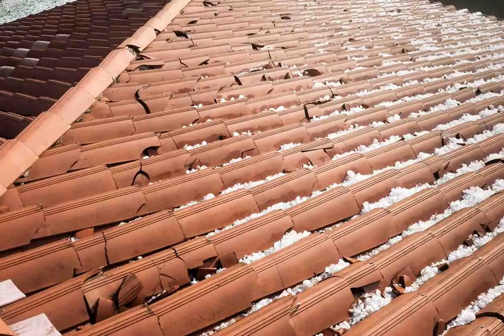

Last year, 4,611 hail storms occurred in the US. Many of these storms had baseball-sized hail that caused significant damage to homes, vehicles, and other outdoor property. State Farm reported that the total average homeowner hail claim was more than $12,000. However, even small hail storms can cause unseen, lasting damage to your roof. Oftentimes, you may be unaware of this damage until it’s too late.
In this article, you’ll learn not only how to identify hail damage but also why hail damage is bad for a roof. You’ll also learn the factors that affect the severity and type of damage done to your roof during a hail storm.
Factors That Affect Hail Damage
The following are all factors that affect the type and severity of hail damage to your roof:
Wind: The speed and direction of wind can vary during a hailstorm. Depending on how heavy the wind is and the direction in which it’s blowing, the location and impact of hail damage will differ.
Size: Hail can range in size—from as small as a pea to as large as a softball. Some stones may have smooth edges, while others are rough. This information is an important factor in what size hail will damage a roof. A good rule of thumb is that the larger the hail, the bigger the damage; however, even small hail can harm roofs.
Building materials: The type of material your roof is made of will affect the damage. For example, an aluminum or asphalt roof will show dings from hail damage, while a vinyl or wooden roof will crack. The age of the roof also plays a part in the seriousness of the damage.
Barriers: If hail has to pass through barriers such as tree branches, fences, adjoining homes, or other structures, the damage may be lessened.
Identifying Hail Damage
Every shingle will react differently when struck by hail. Asphalt and aluminum damage will look very different from wood or vinyl hail damage. Plus, hail can damage a new roof and an older one in different ways. To help you determine whether or not you have hail damage, it’s essential to know the signs of damage on various roofing materials.
Asphalt Shingles

Loss of granules
Dents that feel soft to the touch (like a bruised apple)
Shiny-looking mat and/or asphalt
Random damage with no repeating or discernable pattern
Wood Shingles
Cracked shingle that is brown or orange with sharp corners or edges
Shingles that have been cracked and have little deterioration around the edges
Dents or impact marks around the cracks
Random dents or impacts throughout your roof
Metal roofs are typically very hail-resistant; however, bigger pieces of hail can create dents or dings in the roof, gutters, or siding.
Finally, older roofs are typically more vulnerable to dents or cracks because their granules have been worn down. Hail can damage a new roof, but it’s usually less severe.
Where to Look for Hail Damage
While it is easy to identify significant hail damage like dented, cracked, or broken shingles, smaller damage is harder to spot—especially if you’re not a professional. However, there are a few places around your home that may indicate hail damage, even to the untrained eye. After a big hail storm, take a walk around your property and look for the following:
Gutter damage
Bruised shingles
Missing granules
Torn-off shingles
If you notice any of these signs, you may want to contact a professional to inspect your roof more thoroughly.
Does Hail Cause Roof Leaks?
No matter what type of roofing you have, hail can cause roof leaks. If big enough pieces of hail hit your roof at a high velocity, they have the potential to create holes, which lead to leaks. These leaks may start in the attic but, if left unrepaired, can spread to the rest of your home. The only way to avoid leaks is to recognize hail damage immediately after a storm and repair any issues as soon as possible.
It’s essential to contact a professional roofing company to ensure that your commercial or residential roof is repaired correctly and quickly, so you don’t run into further issues down the road.
If you suspect your roof has hail damage, contact American Roofing for help!
About the Author: Andrew Yorgason
Free estimates
Get a straight answer about your roof.
Free roof evaluation. We'll explain what we find, and if it can be repaired, we won't sell you a replacement.